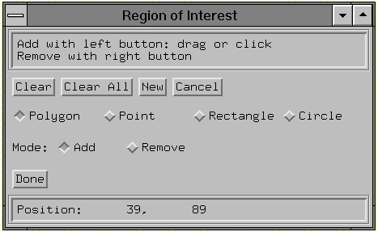

The CW_DEFROI function creates a compound widget that allows the user to define a region of interest within a widget draw window.
Note: This is a modal widget. No other widget applications will be responsive while this widget is in use. Also, since CW_DEFROI has its own event-handling loop, it should not be created as a child of a modal base.
This routine is written in the IDL language. Its source code can be found in the file cw_defroi.pro in the lib subdirectory of the IDL distribution.
Result = CW_DEFROI( Draw [, IMAGE_SIZE = vector ] [, OFFSET = vector ] [, / ORDER ] [, / RESTORE ] [, TAB_MODE = value ] [, ZOOM = vector ] )
This function returns an array of subscripts defining the region. If no region is defined, the scalar -1 is returned.
The widget ID of draw window in which to draw the region. Note that the draw window must have both BUTTON and MOTION events enabled (see WIDGET_DRAW for more information).
The size of the underlying array, expressed as a two element vector: [ columns , rows ]. Default is the size of the draw window divided by the value of ZOOM.
The offset of lower left corner of image within the draw window. Default = [0,0].
Set this keyword to return inverted subscripts, as if the array were output from top to bottom.
Set this keyword to restore the draw window to its previous appearance on exit. Otherwise, the regions remain on the drawable.
Set this keyword to one of the values shown in the table below to determine how the widget hierarchy can be navigated using the Tab key. The TAB_MODE setting is inherited by lower-level bases and child widgets unless it is explicitly set on an individual widget.
Note: It is not possible to tab to disabled (SENSITIVE=0) or hidden (MAP=0) widgets.
Valid settings are:
|
Value |
Description |
|
0 |
Disable navigation onto or off of the widget. This is the default. Child widgets automatically inherit the tab mode of the parent base as described in Inheriting the TAB_MODE Value . |
|
1 |
Enable navigation onto and off of the widget. |
|
2 |
Navigate only onto the widget. |
|
3 |
Navigate only off of the widget. |
Note: In widget applications on the UNIX platform, the Motif library controls what widgets are brought into and released from focus using tabbing. The TAB_MODE keyword value is always zero, and any attempt to change it is ignored when running a widget application on the UNIX platform. Tabbing behavior may vary significantly between UNIX platforms; do not rely on a particular behavior being duplicated on all UNIX systems.
If the image array was expanded (using REBIN, for example) specify this two element vector containing the expansion factor in X and Y. Default = [1,1]. Both elements of ZOOM must be integers.
Region definition widgets do not return an event structure.
The following two procedures create a region-of-interest widget and its event handler. Create a file containing the program code using a text editor and compile using the .RUN command, or type .RUN at the IDL prompt and enter the lines interactively. First, create the event handler:
PRO test_event, ev
; The common block holds variables that are shared between the
; routine and its event handler:
COMMON T, draw, dbutt, done, image
; Define what happens when you click the "Draw ROI" button:
IF ev.id EQ dbutt THEN BEGIN
; The ROI definition will be stored in the variable Q:
Q = CW_DEFROI(draw)
IF (Q[0] NE -1) then BEGIN
; Show the size of the ROI definition array:
HELP, Q
; Duplicate the original image.
image2 = image
; Set the points in the ROI array Q equal to a single
; color value:
image2(Q)=!P.COLOR-1
; Get the window ID of the draw widget:
WIDGET_CONTROL, draw, GET_VALUE=W
; Set the draw widget as the current graphics window:
WSET, W
; Load the image plus the ROI into the draw widget:
TV, image2
ENDIF
ENDIF
; Define what happens when you click the "Done" button:
IF ev.id EQ done THEN WIDGET_CONTROL, ev.top, /DESTROY
END
Next, create a draw widget that can call CW_DEFROI. Note that you must specify both button events and motion events when creating the draw widget, if it is to be used with CW_DEFROI.
PRO test
COMMON T, draw, dbutt, done, image
; Create a base to hold the draw widget and buttons:
base = WIDGET_BASE(/COLUMN)
; Create a draw widget that will return both button and
; motion events:
draw = WIDGET_DRAW(base, XSIZE=256, YSIZE=256, /BUTTON, /MOTION)
dbutt = WIDGET_BUTTON(base, VALUE='Draw ROI')
done = WIDGET_BUTTON(base, VALUE='Done')
WIDGET_CONTROL, base, /REALIZE
; Get the widget ID of the draw widget:
WIDGET_CONTROL, draw, GET_VALUE=W
; Set the draw widget as the current graphics window:
WSET, W
; Create an original image:
image = BYTSCL(SIN(DIST(256)))
; Display the image in the draw widget:
TV, image
; Start XMANAGER:
XMANAGER, "test", base
END
This results in the following:
|
 |
|
Pre 4.0 |
Introduced |
|
6.1 |
Added TAB_MODE keyword |